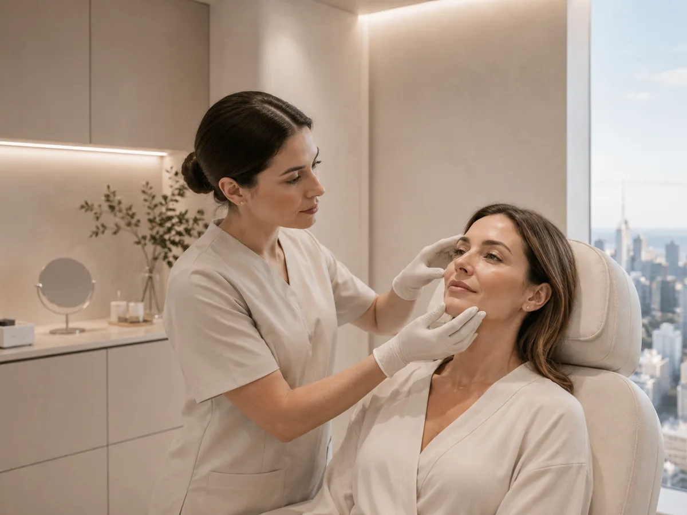
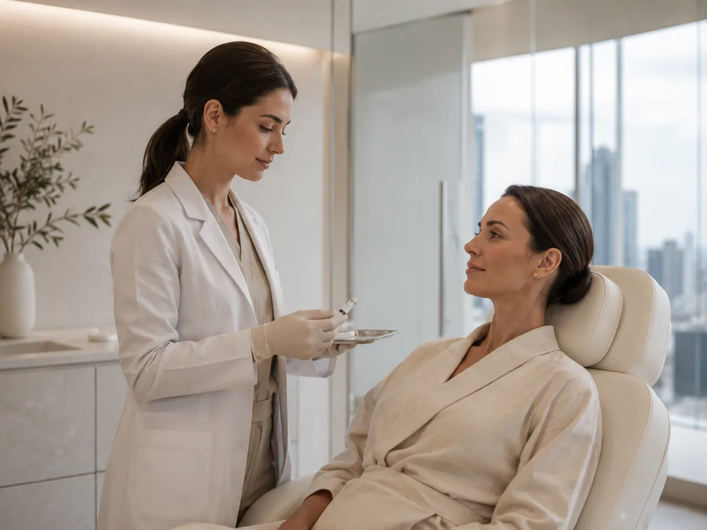
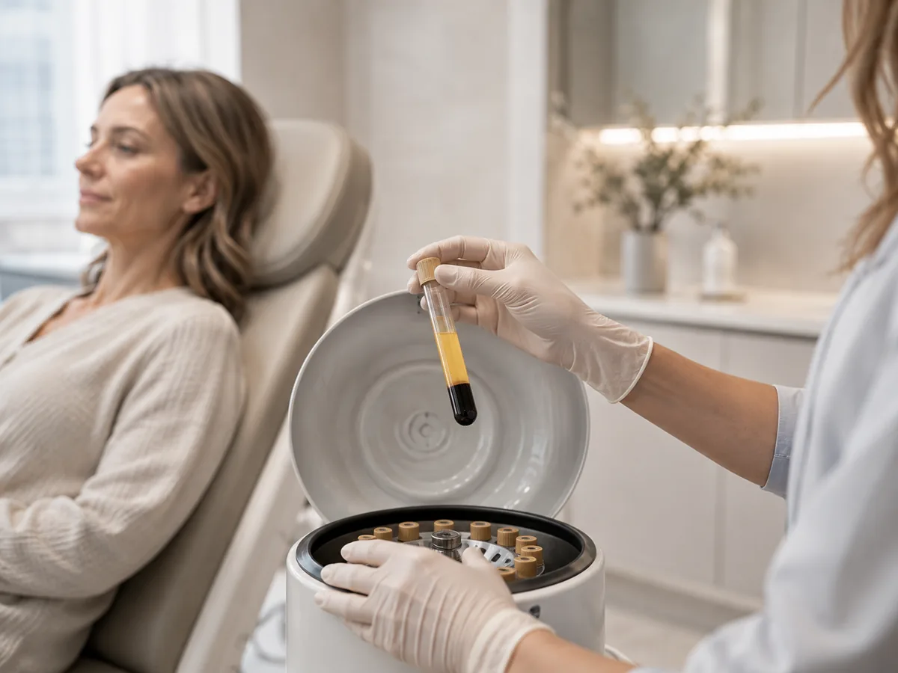
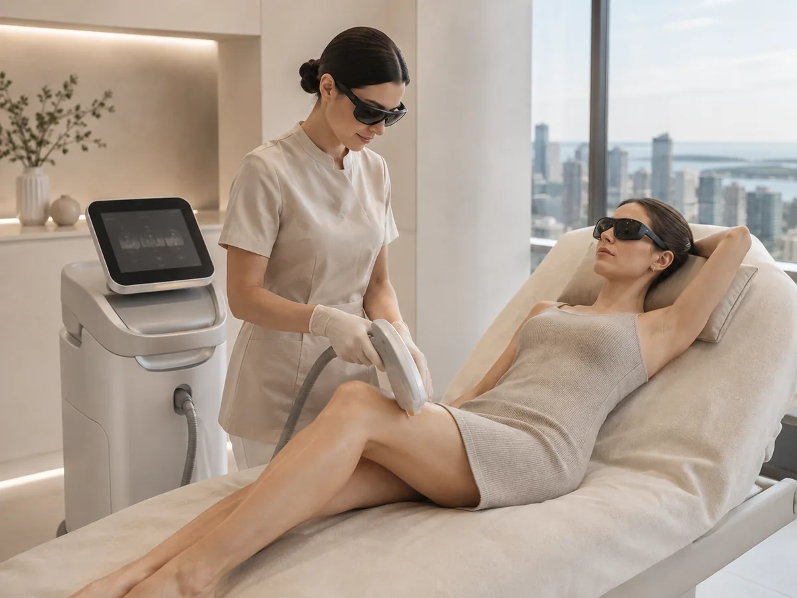

01
Medicina estética facial
Una mirada integral sobre el rostro, los objetivos personales y las opciones que pueden conversarse durante una evaluación.
Conocer másMedicina estética · Pocitos, Montevideo
Tratamientos personalizados, respaldo profesional y una mirada integral sobre tu bienestar.

Evaluación, criterio y continuidad.
 02 · Escucha y criterio
02 · Escucha y criterio
Filosofía Piso 22
Una consulta estética puede ser un espacio para entender qué buscás, conversar sobre las opciones disponibles y tomar decisiones con más información.
Resultados naturales, acompañamiento profesional y decisiones informadas forman parte de una manera más consciente de pensar el cuidado estético.
Tratamientos
Una selección de áreas de cuidado para conversar durante una evaluación profesional.

Una mirada integral sobre el rostro, los objetivos personales y las opciones que pueden conversarse durante una evaluación.
Conocer másOpciones de cuidado vinculadas a la calidad y el sostén de la piel, definidas a partir de una evaluación profesional.
Conocer más
Planificación personalizada y criterio estético para conversar sobre alternativas adecuadas a cada caso.
Conocer más
Una categoría que requiere evaluación previa para determinar si corresponde a tus objetivos de cuidado.
Conocer más
Una consulta permite conocer la planificación, las zonas a tratar y el enfoque adecuado para cada caso.
Conocer más
Una mirada complementaria orientada a integrar bienestar y continuidad dentro de una experiencia de cuidado.
Conocer másDiferencial
Evaluación personalizada
Profesionales capacitados
Seguimiento
Criterio estético natural
Actualización profesional
Programas de cuidado
Una forma de conversar sobre continuidad y planificación, siempre a partir de las modalidades que la clínica confirme.
Consultar modalidadesEquipo
Esta sección está deliberadamente vacía de nombres y especialidades hasta contar con información oficial.
Especialidad · credenciales verificadas
Especialidad · credenciales verificadas
Especialidad · credenciales verificadas
Reseñas
Interfaz preparada para cargar reseñas verificadas de Google, sin fabricar testimonios ni atribuir resultados.
Contenido real pendiente de integrar.
Contenido real pendiente de integrar.
Preguntas frecuentes
La demo propone que la elección empiece por una consulta y una evaluación profesional. La recomendación concreta debe hacerla la clínica según cada caso.
La necesidad de evaluación depende del servicio y del criterio profesional. Este punto debe confirmarse con Piso 22 al completar el contenido oficial.
El sitio está preparado para derivar a WhatsApp o a un sistema de agenda. En esta demo, los botones son placeholders y no realizan una reserva real.
Gabriel Pereira 3173, Pocitos, Montevideo.
Ubicación
Consulta
Demo comercial: conectar este botón al canal de agenda confirmado por la clínica.
Agendar consulta